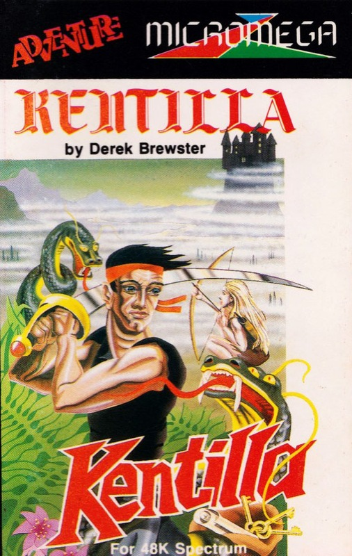
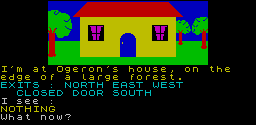

Kentilla


{kind=link}

| Publisher: | Micromega |
| Price: | £6.95 |
| Year: | 1984 |
| Source: | CRASH, Issue 10 |

Kentilla is Micromega’s first step out (from the realms of 3D) into lands shrouded with mists where things rumble in the night. They have apparently done so with due care and consideration of the market and with an author who, though fortuitously adept at high quality arcade games, holds text adventures as his first love. Ideally, Kentilla should have been included in the Adventure Trail, but that would obviously have been very unethical of us since the authors are the same! Micromega describes Kentilla as a richly devious adventure and it is very much so.

The setting is Caraland (the mythical home of Derek Brewster). Grako has returned from the flames of the Abyss after a corridor was opened for a few short seconds as Velnor’s soul was hurled through the void to the flames. Grako has taken residence in the Black Tower and now has within his grasp the Moonstone of Aigrath, the source of Velnor’s power. The scene is nicely set on the Inlay card and links neatly to Derek’s earlier adventure Velnor’s Lair (Quicksilva).
The story starts off for real in front of Ogeron’s house with exits North, West, East and South through a door. What now?
As a reviewer of adventures, Derek Brewster has been apparently working out a universal means of making adventures more accessible and friendly to use, and in Kentilla we can see much of this at work. There are good location descriptions throughout and they generally tell you what you need to know but, as one might expect, EXAMINE is widely used to reveal much more than is instantly apparent within a location. This is most richly used in conjunction with the graphics which are not just pretty adjuncts to brighten up the page, but contain real clues. So, for instance, on entering a hall, and in need of a torch (these aren’t to be found left lying on forest paths) it is worth taking the graphic which shows the walls dotted with burning torches quite seriously. EXAMINE WALL results in a piece of vitally interesting information — the text verifies what you see, and TAKE TORCH reveals that you are now carrying same.
The graphics throughout carry this idea on and it adds a new dimension to the classic style adventure where the first thing to do, presuming there are no savage creatures about, is to start asking questions about what you see as well as read. In themselves, the graphics are small but neat and to the point, avoiding useless wastage of memory.
Kentilla is an interactive game. Life carries on with or without you and in moments of indecision the WAIT command can be useful. The interaction also allows conversations with other characters, all of whom have a life of their own and may choose to be helpful or not. At the start it is comforting to discover that Ogeron (despite the dubious name) is quite friendly and indeed hands you the sword Kentilla which you so desperately need. Another pleasant creature is Elva, who, with her ability to carry so many things, is all too easily treated like a packhorse after a few locations. These characters may be spoken to by using quotes as in SAY TO OGERON "GIVE ME SWORD".
Another element which is unusual is the text editor which is there to aid input. Using CAPS SHIFT with some of the numeric keys allows the player to delete character to the left of the cursor, insert a space, move cursor left or right and recall the last command. As the insert points out, this last command can be conveniently used in lengthy battle sequences where KILL URGA may rapidly be changed without retyping everything into EXAM URGA.
So much for the techniques, what about the game. The object is to return Grako to the place from whence he came, the flames of the Abyss, and it is your task together with the sword Kentilla. It is packed with devious problems and will take the experienced adventurer a long time to get right through it. Lateral — even on occasion some unpleasant — thinking is required to overcome a number of thorny problems. Right actions can make friends of enemies who may then do things for you that you are unable to do. One thing you are able to do in Kentilla is LOOK. This useful command can have a similar function as EXAMINE, for example, LOOK IN CHEST but it may also be employed for seeing ahead before making a move as in LOOK EAST. Just LOOK on its own will redescribe the location. It may seem a small point but the direction LOOK command adds an element of immediate strategy to Kentilla and spotting some dreadful Urgamaul before leaping into its location can leave you prepared for fight or flight.
Kentilla is a very good adventure which offers the right level of difficulty so that you can wander around for a while without attempting to solve the quest thus acquainting yourself with Caraland and its inhabitants and learning how to interact with them. This is required quite frequently and first impressions of characters, aggressive or passive, can be, and are often intended — to be misleading. A word of warning — Kentilla is also a very, very long adventure to play through, not because it has thousands of locations but because you will need to retrack, deviate, return and revisit all the while — there is no straightforward linearity here. And this is not just a case of that old adventure problem, the amount of objects you can carry, since Elva, poor thing, is as strong as an ox. The only drawback we discovered was inputting. The computer seems to accept each letter typed in a little slowly with the result that you can trip up over letters when typing in commands, although the sophisticated text editor helps here — but perhaps it is the very sophistication that has slowed acceptance. It’s a small point, however and to be borne in mind when typing fast in battles!
Kentilla is a sure winner as an adventure with many devious problems which should keep any adventurer busy through the coming winter months and it’s excellent value for money. Just one tip; your loyal sidekick can be very helpful when giving and taking things.
COMMENTS
| Difficulty: | Difficult almost from the start, but presents an always attractive challenge |
| Graphics: | Above average, small but important — a rare thing |
| Presentation: | Good |
| Input facility: | A trifle slow but very user-friendly, full sentence |
| Response: | Fast |
| Special features: | Character interaction and conversation |
| General rating: | Excellent |
| Atmosphere: | 8 |
| Vocabulary: | 9 |
| Logic: | 9 |
| Debugging: | 9 |
| Overall: | 10 |